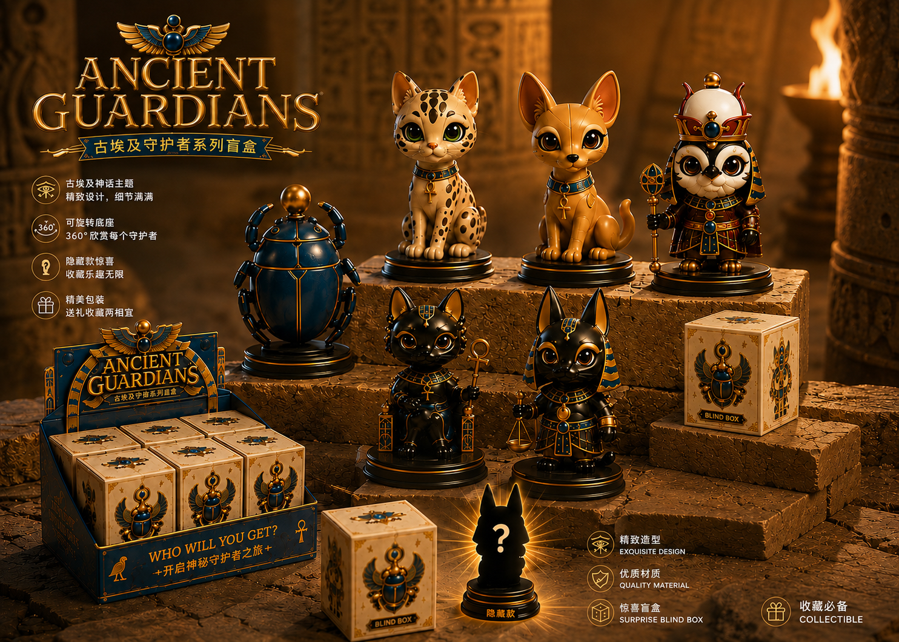
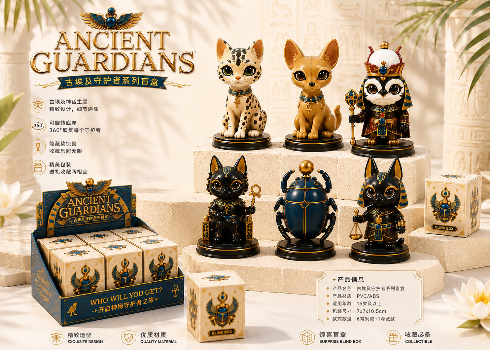

古埃及守护者系列盲盒
潮玩 × 传统工艺 × 萌趣，重新讲述古老文明。以圣甲虫、猫神、法老等埃及意象为灵感，打造 6 款常规款与 1 款隐藏款的收藏体验。

产品规格PVC / ABS · 适用年龄 15 岁以上 · 7 × 7 × 10.5 cm
系列构成6 款常规款 + 1 款隐藏款 · 可旋转底座 · 惊喜盲盒包装


项目详情页 · 展示系列设定、产品信息与视觉延展方向。
潮玩 × 传统工艺 × 萌趣，重新讲述古老文明。以圣甲虫、猫神、法老等埃及意象为灵感，打造 6 款常规款与 1 款隐藏款的收藏体验。


项目详情页 · 展示系列设定、产品信息与视觉延展方向。